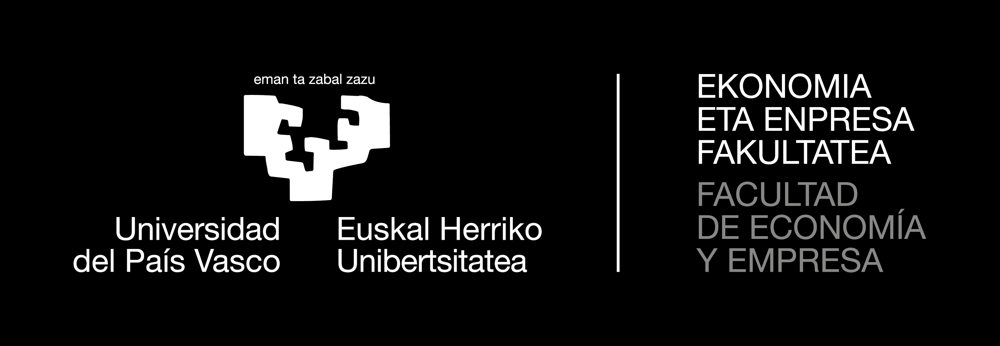

XYLEM × JEC26Title
A collaboration proposal · Xylem × JEC26
Biomimicry & Agentic AI
for Critical Economics & Development
Reading nature as model, measure & mentor — and turning its solutions into algorithms for economies that regenerate.
MSc. Felipe López MantillaUAL · Creative Computing Institute


Prepared forXX Jornadas de Economía Crítica · Bilbao 2026EHU Bizkaia · Facultad de Economía y EmpresaBiomimicry & Agentic AI for Critical Economics01 / 16 · ← → navigate